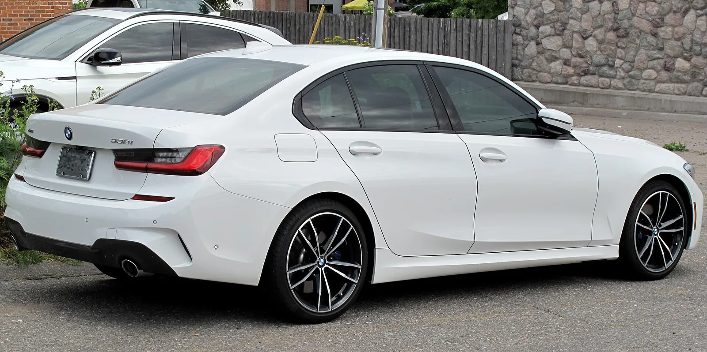
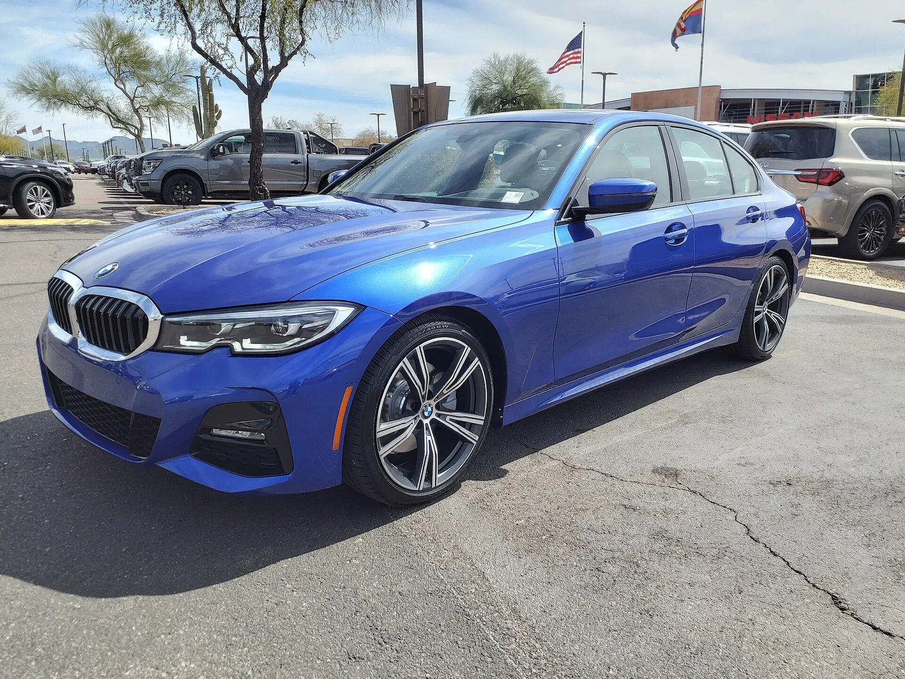
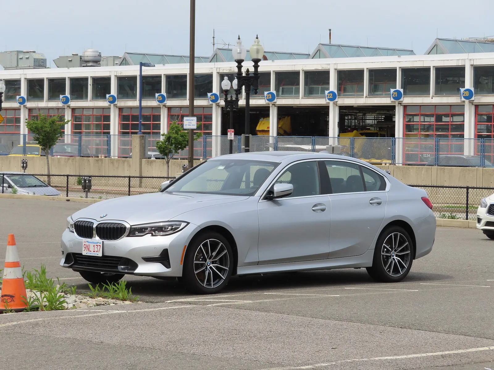
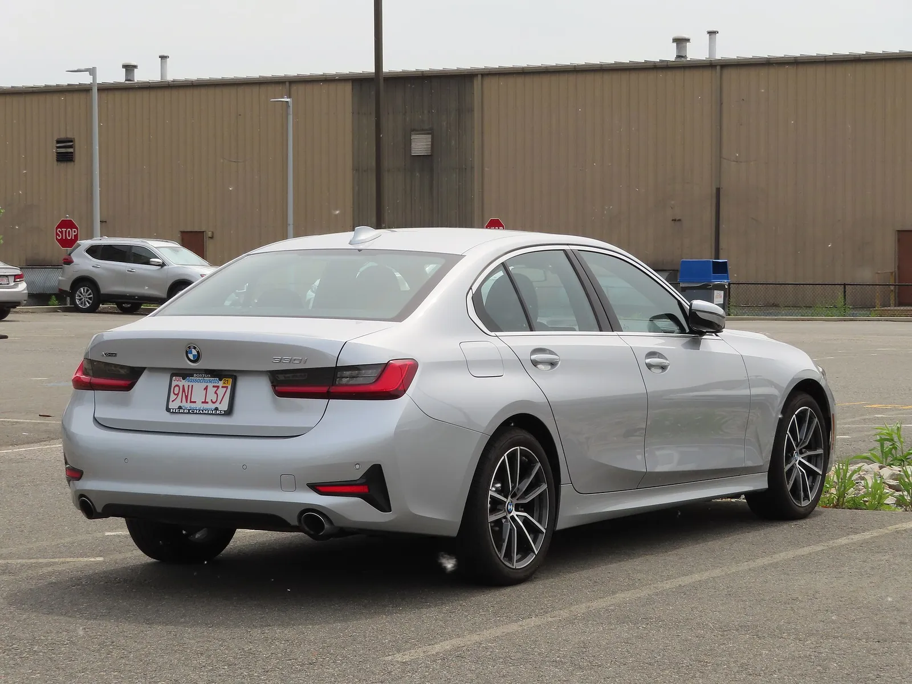
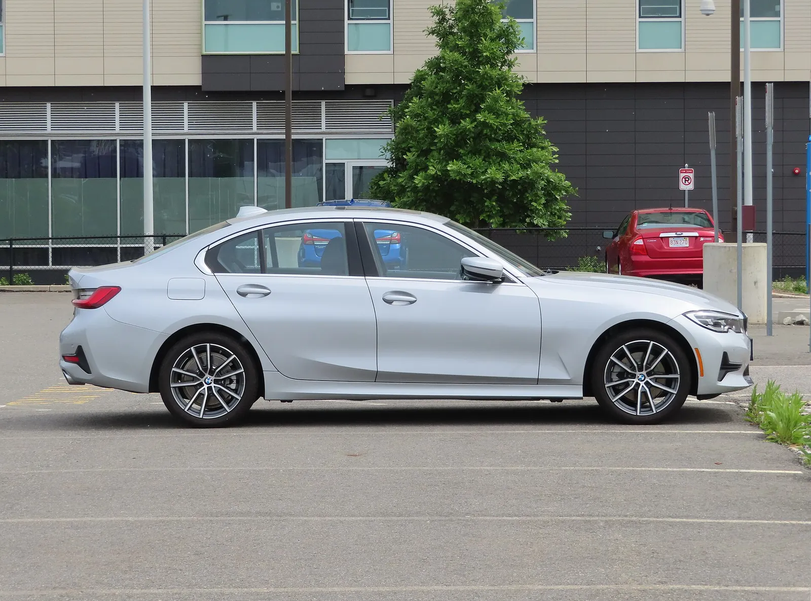
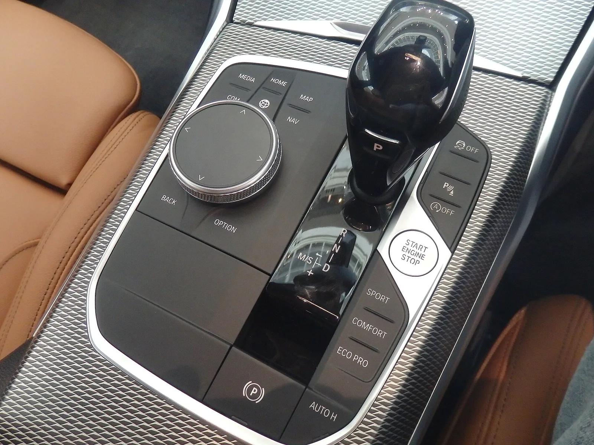
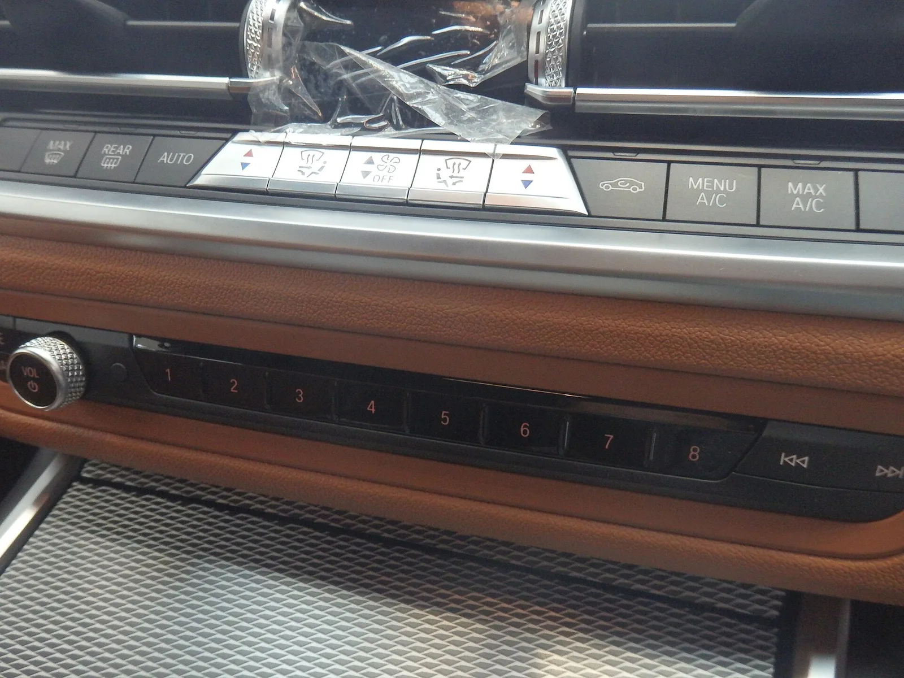
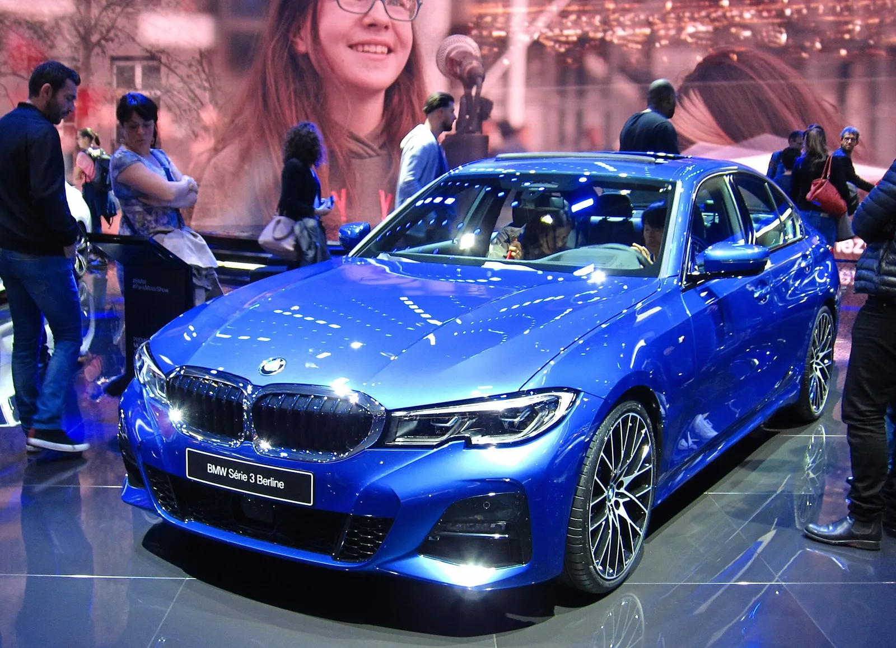
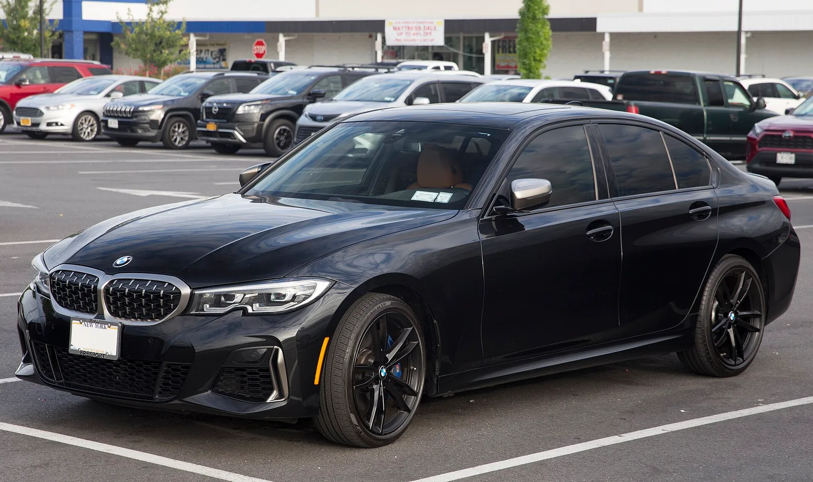

▲ 3분기 미국 판매 증가의 주인공은 현행 G20 세대 3시리즈다(사진은 파일 정보상 2020년형 330i xDrive) ⓒ Elise240SX (Wikimedia Commons, CC BY-SA 4.0)
"신형이 나왔는데 구형이 더 잘 팔린다." BMW 3시리즈의 미국 판매가 46% 늘었다는 소식이 이런 문장으로 퍼지고 있다. 그런데 BMW 북미법인 공식 판매표를 직접 열어 보면 이 문장에는 두 군데 손볼 곳이 있다. 첫째, 46.4%는 9월 한 달이 아니라 2026년 3분기(7~9월) 전체의 증가율이다. 둘째, 미국에서는 신형(G50)이 아직 팔리지 않았다. 3분기 11,256대는 전부 현행 G20 세대의 기록이며, '신형 대 구형' 대결이 아니라 '단종을 앞둔 구형이 홀로 판 숫자'다.
이 글은 BMW 북미법인 Q3 보도자료와 판매표를 1차 자료로 삼고, 지피코리아(10월 3일 보도)와 카스쿱스, BMW블로그 보도를 대조해 카프리즘이 다시 계산한 결과다. 신형 3시리즈의 스펙과 가격은 신형 3시리즈(G50) 공개 기사에서, 전기 i3와 플랫폼 이야기는 G50·i3 노이어클라쎄 기사에서, 공개 전 예상은 완전변경 예고 기사에서 다뤘으므로 여기서는 '판매 숫자'에만 집중한다. 미국 세단 시장 전체의 9월 흐름은 미국 세단 판매 기사에서 따로 다뤘다.
1. 46.4%의 정체 — 3분기인가, 9월 한 달인가
BMW 북미법인은 10월 1일(현지시간) Q3 2026 판매 결과를 발표했다. 브랜드 합계는 100,210대로 전년 3분기(96,886대)보다 3.4% 늘었고, 1~9월 누적은 287,154대(+4.3%)다. 모델별 판매표에서 3시리즈는 11,256대 대 7,689대, +46.4%로 표기돼 있다. 지피코리아 기사도 같은 수치를 "3분기"로 적었다. 따라서 46%를 '9월에 갑자기 터진 수치'로 읽으면 틀린다.
| 구분 | 2026 | 2025 | 증감 | 카프리즘 메모 |
|---|---|---|---|---|
| 3분기(7~9월) | 11,256대 | 7,689대 | +46.4% (+3,567대) | 공식 판매표와 세 매체가 일치 |
| 1~9월 누적 | 29,987대 | 21,846대 | +37.3% (+8,141대) | 공식 판매표 |
| 9월 단월 | 확인 못 함 | 확인 못 함 | 확인 못 함 | 이번 판매표에는 월별 모델 수치가 없다 |
📍 판매표에 적힌 '3시리즈'의 범위
판매표의 3시리즈 행이 세단 전체인지, 330e 같은 플러그인 하이브리드와 M3 같은 고성능 파생을 모두 포함하는지는 보도자료에서 확인하지 못했다. 카스쿱스는 "3 Series sedan"이라고 썼다. 아래 계산은 모두 이 행의 숫자를 그대로 쓴다.

▲ 같은 차량의 후면(파일 정보상 2020년형 330i xDrive). 판매표는 3시리즈의 연식·트림별 내역을 공개하지 않아 이 사진이 2026년형과 같은 사양이라고 확정하지 않는다 ⓒ Elise240SX (Wikimedia Commons, CC BY-SA 4.0)
2. 막판 한 달이 아니다 — 2분기에 이미 +56.8%였다
분기별로 쪼개 보면 급증은 3분기에 시작된 일이 아니다. 1분기는 8,189대(+10.2%, BMW블로그)로 완만했지만, 2분기에 10,542대(+56.8%)로 뛰었고 3분기는 11,256대(+46.4%)로 수준이 한 번 더 올라갔다. 1~3분기 합계(8,189+10,542+11,256)는 29,987대로 판매표의 누적 수치와 정확히 맞는다. 2025년 1·2분기 수치는 증감률에서 카프리즘이 역산한 근사치다.
| 분기 | 2026년 | 2025년(역산 포함) | 증감률 | 전년 대비 증가분 |
|---|---|---|---|---|
| 1분기 | 8,189대 | 약 7,434대 | +10.2% | 약 +755대 |
| 2분기 | 10,542대 | 약 6,723대 | +56.8% | 약 +3,819대 |
| 3분기 | 11,256대 | 7,689대 | +46.4% | +3,567대 |
| 1~3분기 | 29,987대 | 21,846대 | +37.3% | +8,141대 |
계산 방식은 다음과 같다. 2025년 3분기(7,689대)는 판매표에 있고, 2025년 상반기는 누적 21,846대에서 3분기를 뺀 14,157대다. 2025년 2분기는 10,542대를 1.568로 나눈 약 6,723대, 1분기는 상반기에서 이를 뺀 약 7,434대이며 이 값에 +10.2%를 적용하면 8,189대와 맞아떨어진다. 역산이므로 수십 대 안팎의 오차는 있을 수 있다.
직접 확인한 값도 있다. 2분기 10,542대(+56.8%)와 상반기 18,731대(+32.3%)는 BMW블로그 Q2 기사에서, 1분기 8,189대(+10.2%)는 BMW블로그 4월 2일 기사에서 확인했다. 두 값을 더하면 18,731대로 상반기 수치와 같다. 역산한 2025년 1·2분기 값도 Goodcarbadcar 분기 집계(1분기 7,431대, 2분기 6,725대)와 3대 이내로 맞는다. 다만 이 집계의 2025년 3분기는 7,441대로 BMW 판매표(7,689대)와 달라, 3분기 이후 수치는 BMW 판매표만 기준으로 삼았다.
📍 '기저 효과'만으로는 설명이 안 된다
2025년 3분기(7,689대)는 2025년 1분기(약 7,434대)와 비슷한 수준이다. 작년 숫자가 유난히 낮아서 증가율이 커 보이는 것이라면 2026년 1분기도 크게 늘었어야 하지만 +10.2%에 그쳤다. 2026년 1분기 대비 3분기 판매량 자체가 약 37.5%(8,189대에서 11,256대로) 늘었다(카프리즘 계산). 실제 판매 수준이 올라간 것이다.

▲ 푸른 외장의 G20 세대 3시리즈 330i(파일 정보상 2020년형 기본 트림 표기). 판매표는 파워트레인·트림별 내역을 공개하지 않는다 ⓒ HJUdall (Wikimedia Commons, CC0)
3. BMW 전체 속의 3시리즈 — 증가분의 100% 이상이 3시리즈
3분기 BMW 브랜드는 96,886대에서 100,210대로 3,324대 늘었다. 같은 기간 3시리즈는 3,567대 늘었다. 즉 3시리즈의 증가분이 브랜드 전체 증가분보다 큰 셈이다. 3시리즈를 제외한 나머지 모델의 합은 오히려 89,197대에서 88,954대로 243대(-0.3%) 줄었다. BMW 공식 분류상 승용차(X1·X2·Z4 포함)로 범위를 좁히면 3시리즈를 뺀 나머지는 34,346대에서 32,366대로 5.8% 줄었다. 이 승용차 범위에는 세단·쿠페뿐 아니라 X1·X2도 들어 있어 이 수치를 곧바로 '세단 시장'의 감소로 읽을 수는 없다.
| 구분 | 2026년 3분기 | 2025년 3분기 | 증감 | 계산 방식 |
|---|---|---|---|---|
| BMW 브랜드 전체 | 100,210대 | 96,886대 | +3.4% (+3,324대) | 공식 판매표 |
| 3시리즈 | 11,256대 | 7,689대 | +46.4% (+3,567대) | 공식 판매표 |
| 3시리즈 제외 전체 | 88,954대 | 89,197대 | -0.3% (-243대) | 전체 - 3시리즈 |
| 승용차 합계 | 43,622대 | 42,035대 | +3.8% (+1,587대) | 공식 판매표(승용차) |
| 3시리즈 제외 승용차 | 32,366대 | 34,346대 | -5.8% (-1,980대) | 승용차 - 3시리즈 |
| 경트럭(SUV) 합계 | 56,588대 | 54,851대 | +3.2% (+1,737대) | 공식 판매표(경트럭) |
| 승용차 중 3시리즈 비중 | 25.8% | 18.3% | +7.5%p | 11,256÷43,622, 7,689÷42,035 |
| 브랜드 중 3시리즈 비중 | 11.2% | 7.9% | +3.3%p | 11,256÷100,210, 7,689÷96,886 |
이 계산이 말해 주는 것은 한 가지다. 3분기 BMW 미국 판매의 '플러스'는 사실상 3시리즈 한 모델이 만들어냈다. 카스쿱스도 BMW 전체는 늘었지만 모델별로는 "아주 이상한 한 해"라고 평했다. X4(1,826대에서 72대)와 iX(3,136대에서 121대)가 90%대 급감했다. 다만 두 모델의 사정은 다르다. X4는 2025년 11월 생산이 끝난 단종 모델이라 재고만 남은 상태이고, iX는 BMW 전기차 판매 전반이 줄어든 흐름과 모델 교체 시기가 겹친 경우다(두 원인의 비중은 확인하지 못했다).

▲ 주차장에 세워진 은색 G20 세대 3시리즈. 승용차 중 비중 18.3%였던 3시리즈가 25.8%까지 커졌다(카프리즘 계산) ⓒ Jason Lawrence (Wikimedia Commons, CC BY 2.0)
4. 승용차 라인업은 어땠나 — 2·5·7·8시리즈는 감소
판매표의 승용차 행을 보면 3시리즈만 이례적이다. 4시리즈는 8,520대 대 8,508대로 +0.1%, 사실상 제자리였다. 2시리즈는 -9.7%, 5시리즈는 6,016대 대 7,578대로 -20.6%, 7시리즈는 2,539대 대 2,824대로 -10.1%, 8시리즈는 484대 대 855대로 -43.4%(1~9월 누적 2,757대 대 2,862대)였다. 5시리즈가 20% 넘게 줄어든 것과 3시리즈가 46% 늘어난 것을 연결해 '5시리즈 수요가 3시리즈로 옮겨왔다'고 해석할 수도 있지만, 이를 뒷받침하는 구매자 이동 자료는 확인하지 못했다. 이 부분은 추정이다.
| 모델 | 2026년 3분기 | 2025년 3분기 | 증감 |
|---|---|---|---|
| 2시리즈 | 4,537대 | 5,022대 | -9.7% |
| 3시리즈 | 11,256대 | 7,689대 | +46.4% |
| 4시리즈 | 8,520대 | 8,508대 | +0.1% |
| 5시리즈 | 6,016대 | 7,578대 | -20.6% |
| 7시리즈 | 2,539대 | 2,824대 | -10.1% |
| 8시리즈 | 484대 | 855대 | -43.4% |
📍 표에 없는 모델과 합계 검증
BMW 판매표에는 i4 행이 없다(행은 i3·i8, 2·3·4·5·6·7·8시리즈, Z4, X1, X2). 위 표에 넣은 2·3·4·5·7·8시리즈 합계는 33,352대이고, 승용차 합계 43,622대에서 이를 빼면 나머지 10,270대가 남는다. 이는 Z4 406대, X1 7,458대, X2 2,406대를 합한 값(10,270대)과 정확히 일치해 승용차 합계가 모두 검증된다. 표의 수치는 판매표 PDF를 텍스트로 추출한 뒤 행 정렬이 어긋난 부분을 증감률·누적 수치와 맞춰 복원한 것이다.

▲ G20 세대 3시리즈의 후면. 이번 3분기 판매는 이 세대의 몫이다 ⓒ Jason Lawrence (Wikimedia Commons, CC BY 2.0)
5. '신형 대 구형'이 아니다 — 신형은 아직 판매 전
BMW 북미법인은 Q3 보도자료에서 "완전히 새로운 8세대 3시리즈가 내년 초 미국 딜러에 도착하기 시작한다"고 밝혔다(전기 i3 병행). Q3 보도자료의 표현은 "내년 초"이고, 9월 29일 신형 3시리즈 보도자료는 미국 도착 시기를 2027년 1분기로 적었다(직접 확인). 앞선 기사에서 다룬 대로 가솔린 G50 생산은 딩골핑 공장에서 11월에 시작한다. 따라서 3분기 미국 3시리즈 11,256대에는 G50이 한 대도 들어 있지 않다고 보는 것이 합리적이다. 다만 BMW가 "신형 판매량은 0대"라고 직접 적은 문장은 확인하지 못했다.
| 시점 | 내용 | 근거 |
|---|---|---|
| 2026년 3분기 | G20만 판매, 11,256대(+46.4%) | BMW 북미법인 판매표 |
| 2026년 9월 29일 | 8세대 3시리즈 미국 가격·사양 발표(330 4만 9,900달러부터) | BMW 보도자료(2026.09.29) |
| 2026년 10월 | G20 세단 생산 종료 예정 | BMW블로그 4월 보도(BMW 공식 확인은 못 함) |
| 2026년 11월 | G50 가솔린 생산 시작(딩골핑) | BMW 프레스클럽 보도(앞선 기사 참고) |
| 2027년 1분기(Q3 보도자료는 "내년 초") | G50·전기 i3 미국 딜러 도착 예정 | BMW 북미법인 Q3 보도자료, 9월 29일 신형 보도자료(1분기 표기) |
이 일정이 흥미로운 이유는 분기 대부분의 기간 동안 구매자가 신형의 가격과 옵션을 몰랐다는 점이다. 신형 가격(330 4만 9,900달러, M350 xDrive 6만 5,900달러, i3 50 xDrive 6만 1,500달러, 모두 배송비 1,350달러 별도)은 3분기가 끝나기 직전인 9월 29일에야 나왔다. BMW블로그가 4월에 "신형의 옵션과 가격을 아직 모른다"는 점을 이유 중 하나로 든 것과 같은 맥락이다. 다만 이것이 구매 결정을 실제로 얼마나 바꿨는지는 자료가 없다.

▲ 측면에서 본 G20 세대 3시리즈. 신형 G50은 미국에서 2027년 초(1분기) 도착 예정이다 ⓒ Jason Lawrence (Wikimedia Commons, CC BY 2.0)
6. 왜 늘었나 — 근거 있는 것과 추정을 가른 가설표
BMW는 3시리즈 급증의 이유를 따로 설명하지 않았다. 아래는 매체가 제시한 가설을 근거의 질에 따라 정리한 것이다. 지피코리아는 구형이 키드니 그릴과 호프마이스터 킨크, 물리 버튼·iDrive 다이얼 같은 '전통적인 BMW다움'을 유지하기 때문이라고 설명했다. 이는 기사 작성 매체의 해석이며 구매자 설문 같은 근거는 확인하지 못했다.
| 가설 | 근거 | 등급 |
|---|---|---|
| 단종 임박 막판 수요 | BMW블로그가 4월에 같은 패턴을 지적, 2분기 +56.8%·3분기 +46.4%로 이어짐. 구매자 이동은 직접 확인 못 함 | 근거 일부(매체 해석) |
| 신형 디자인(노이어클라쎄) 거부감 | BMW블로그 "뉴클라쎄 스타일링이 마음에 안 드는 사람들", 지피코리아는 터치스크린 중심 변화 언급. 설문·판매 데이터 없음 | 매체 의견 |
| 신형 초기형 회피·리스 고객의 안정 선호 | BMW블로그 "Old is gold", 리스 비중이 크다는 설명. 3시리즈 리스 비율은 확인 못 함 | 매체 의견 |
| 신형 가격·옵션 정보 공백 | 신형 가격이 9월 29일에야 공개된 일정으로 확인됨. 구매 결정 영향은 추정 | 일정은 사실, 영향은 추정 |
| 기저 효과 | 2025년 1분기와 3분기 수준이 비슷한데 2026년 1분기는 +10.2%에 그쳐 단독 설명 불가 | 단독 설명은 기각 |
| 재고 소진·가격 인하 | 일부 딜러 광고에 리스·저리 할부 문구가 보이나 지역·기간·실제 할인 폭을 확인하지 못함. BMW는 Q2 보도자료에서 브랜드 전체 "제품 가용성 개선"을 언급 | 확인 못 함 |
| 5시리즈 등 다른 세단 수요 이동 | 5시리즈 -20.6%, 3시리즈 +46.4%가 같은 분기에 나타났다는 사실만 확인 | 추정 |
'단종 직전 몰림'이 3시리즈만의 현상인지는 같은 판매표로 가늠할 수 있다. 생산이 끝난 Z4는 3분기에는 406대로 전년(536대)보다 24.3% 줄었지만 1~9월 누적은 1,983대 대 1,603대로 23.7% 늘었다(BMW블로그도 Z4의 누적 +23.7%를 적었다). 8시리즈도 단종 소식과 맞물려 1분기에 18.2% 늘었다고 BMW블로그가 전한다. 다만 Z4·8시리즈는 판매 규모가 3시리즈의 일부에 불과해 직접 비교하기는 어렵고, 이들 단종 모델의 이야기는 곧 사라지는 BMW 두 대 기사에서 따로 다뤘다.

▲ G20 세대 3시리즈의 센터콘솔. iDrive 다이얼과 주행모드 버튼이 물리 조작부로 남아 있다(파일 정보상 2019년형 330i M Sport, 시장·연식별 사양 차이는 확정하지 않음) ⓒ Bindydad123 (Wikimedia Commons, CC BY-SA 4.0)
지피코리아가 든 '물리 버튼·iDrive 다이얼' 가설이 무엇을 가리키는지는 현행 G20의 실내 사진으로 확인된다. 센터콘솔의 컨트롤러뿐 아니라 공조 버튼과 라디오 프리셋 버튼도 별도 스위치로 남아 있다. 신형은 BMW Panoramic iDrive를 쓴다는 것이 9월 29일 보도자료의 설명이다. 다만 버튼이 구매 결정을 좌우했다는 판매 데이터나 구매자 조사는 확인하지 못했다. 이 가설은 어디까지나 매체의 해석이다. 구형을 노리는 구매자라면 시세 흐름도 살펴볼 만한데, 미국 현행 330i 중고 시세 사정은 330i 감가 기사에서 다뤘다.

▲ 같은 차종 대시보드의 공조·라디오 프리셋 물리 버튼(파일 정보상 2019년형 330i M Sport) ⓒ Bindydad123 (Wikimedia Commons, CC BY-SA 4.0)

▲ 전시장에 놓인 파란색 G20 세대 3시리즈 전면. 촬영 행사와 연식은 파일 정보로 확정하지 않았다 ⓒ Rutger van der Maar (Wikimedia Commons, CC BY 2.0)
7. 4분기에 볼 것 — 구형 재고와 신형 도착 사이
BMW블로그 보도대로 G20 세단 생산이 10월에 끝난다면 4분기는 구형 재고가 줄어드는 시기와 신형 도착 전 공백이 겹친다. 이번 3분기 같은 판매가 4분기에도 이어질지, 재고 소진으로 꺾일지는 BMW가 공개한 자료로는 알 수 없다. 확인할 수 있는 것은 두 가지다. 올해 1~9월 누적이 이미 29,987대로 작년 같은 기간(21,846대)을 8,141대 넘어섰고, 신형 판매는 2027년 1분기에야 시작된다는 점이다.
비교 기준이 높다 — 2025년 4분기는 약 11,185대였다. 더 눈여겨볼 것은 4분기의 '기저'다. Goodcarbadcar 분기 집계에 따르면 2025년 4분기 3시리즈는 11,185대로, 같은 해 3분기(BMW 판매표 기준 7,689대)보다 약 45% 많았다. 이 값은 BMW 판매표의 1~9월 누적(21,846대)에 더해 2025년 연간 33,031대를 이루는 값이다. 즉 올해 3분기에 이미 작년 4분기와 같은 수준(11,256대 대 11,185대)에 올라섰다. 3분기에 +46.4%를 기록한 판매가 4분기에 같은 수준을 유지해도 전년 대비는 +0.6%가 된다. 증가율이 눈에 띄게 낮아질 수 있다는 뜻이며, 판매가 꺾였다는 신호는 아니다. 2025년 4분기가 왜 강했는지는 확인하지 못했다.
| 4분기 유지율(3분기 대비) | 2026년 4분기 | 전년 4분기(11,185대) 대비 | 2026년 연간 | 2025년 연간(33,031대) 대비 |
|---|---|---|---|---|
| 50% | 5,628대 | -49.7% | 35,615대 | +7.8% |
| 70% | 7,879대 | -29.6% | 37,866대 | +14.6% |
| 85% | 9,568대 | -14.5% | 39,555대 | +19.8% |
| 100%(3분기와 동일) | 11,256대 | +0.6% | 41,243대 | +24.9% |
| 110% | 12,382대 | +10.7% | 42,369대 | +28.3% |
계산 방식은 '2026년 4분기 = 3분기 11,256대 x 유지율', '연간 = 1~9월 누적 29,987대 + 4분기'이고, 전년 대비는 각각 11,185대와 33,031대로 나눈 값이다. 가정이 둘 있다. 첫째, 2025년 4분기 11,185대는 BMW 판매표가 아니라 외부 집계이며, 이 집계의 자체 연간 합계(32,782대)는 3분기 값 차이 때문에 위 33,031대와 249대 다르다. 둘째, 유지율은 임의로 정한 구간이며 BMW의 생산·재고 계획과는 무관하다. 월평균으로 보면 1분기 약 2,730대, 2분기 약 3,514대, 3분기 약 3,752대로 계속 높아졌다. 4분기가 3분기의 절반에 그쳐도 연간 판매는 2025년을 넘어서므로, 분기 증가율 하나만 보고 '둔화'로 읽지 말고 어느 기간을 기준으로 삼았는지부터 확인해야 한다.

▲ 검은색 G20 세대 M340i xDrive(파일 제목 기준 2020년형). 판매표의 3시리즈 행에 M340i 같은 고성능 파생이 포함되는지는 확인하지 못했다 ⓒ Mr.choppers (Wikimedia Commons, CC BY-SA 4.0)
| 질문 | 지금 확인된 것 | 남은 불확실성 |
|---|---|---|
| 급증은 일시적인가 | 1분기 +10.2%, 2분기 +56.8%, 3분기 +46.4%로 두 분기 연속 고성장 | 4분기 재고·생산 종료 영향(미확인). 전년 4분기가 약 11,185대로 높아 증가율은 둔화돼 보일 수 있음 |
| 신형이 구형 판매를 갉아먹나 | 3분기에는 신형 판매 자체가 없음 | 2027년 이후 비교는 아직 불가 |
| 구매자는 구형을 선택하고 있나 | 판매 증가는 사실 | 선택 이유는 BMW 미발표(매체 해석뿐) |
| 한국 시장에도 해당하나 | 이 기사는 미국 수치만 다룸 | 국내 3시리즈 판매·출시 일정은 확인하지 못함 |
✅ 판매 뉴스를 읽을 때 확인할 것
· 기간 기준 — '3분기 합계'인지 '단월'인지, 전년 동기 대비인지 직전 분기 대비인지 먼저 본다
· 비교 대상 — '신형 대 구형'이라는 표현이 나오면 신형이 실제로 판매 중인지부터 확인한다
· 전체에서 차지하는 비중 — 한 모델의 증가분이 브랜드 전체 증가분을 넘으면 나머지 모델은 줄었다는 뜻일 수 있다
· 이유 문장의 출처 — 제조사 공식 설명인지 매체 해석인지 구분한다. 이번 3시리즈 이유는 후자다
8. 자주 묻는 질문
Q. 46%는 올해 연간 증가율인가?
아니다. 46.4%는 3분기(7~9월)의 전년 동기 대비다. 1~9월 누적 증가율은 37.3%다.
Q. '신형이 구형보다 덜 팔린다'는 말은 맞나?
비교할 수 없다. 신형 8세대는 미국에서 2027년 1분기 도착 예정이라 3분기에는 판매 자체가 없었다.
Q. 한국에서도 구형이 더 팔리나?
이 기사는 미국 판매표만 다뤘다. 국내 3시리즈 판매 흐름과 신형 출시 일정은 확인하지 못했다.
Q. 지금 구형을 사면 싸게 살 수 있나?
BMW는 재고·인센티브 수치를 공개하지 않았고, 3분기 판매 증가가 할인 때문인지도 확인하지 못했다. 가격은 지역·딜러별로 다르므로 이 기사의 판매 통계만으로 판단할 수 없다.
9. 요약
46.4%는 9월 한 달이 아니라 2026년 3분기 전체 증가율이다. BMW 북미법인 판매표 기준 3시리즈는 7,689대에서 11,256대로 늘었고, 1~9월 누적은 29,987대(+37.3%)다. 급증은 2분기(+56.8%)부터 이미 시작됐다.
'신형 대 구형'이 아니라 신형 판매 전의 구형 기록이다. 8세대 3시리즈는 미국에서 2027년 초 도착 예정이라 3분기 수치는 사실상 G20만의 숫자다. 3시리즈의 증가분(+3,567대)은 BMW 브랜드 전체 증가분(+3,324대)보다 커서, 3시리즈를 빼면 브랜드는 0.3% 줄었다(카프리즘 계산).
4분기는 비교 기준이 높다. 2025년 4분기 약 11,185대(외부 집계)가 이미 3분기 수준이어서, 4분기가 3분기와 같아도 전년 대비는 +0.6%에 그친다(카프리즘 계산).
이유는 BMW가 밝히지 않았다. 단종 임박, 신형 디자인 거부감, 초기형 회피는 매체 해석이고, 재고·가격 인하는 확인하지 못했다. 3시리즈의 파워트레인별 내역도 확인하지 못했다.